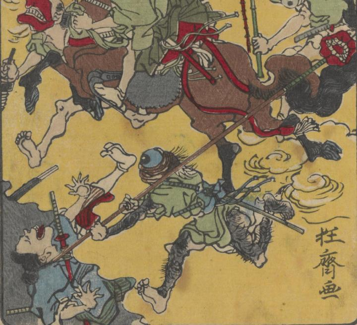

大きな目玉の一つ目が、大きな口がついた鎗で攻撃している。手足は毛むくじゃらで、目の上には、長いまつげのようなものがみえる。
著作者：河鍋暁齊／出典：親書誌：U426_nichibunken_0367：狂斎百𠷰；キョウサイ ヒャクズ／日付：2014／資源識別子：U426_nichibunken_0367_0006_0003
Copyright (c)2010- International Research Center for Japanese Studies, Kyoto, Japan. All rights reserved.